Резюме проекта
Что представляет собой павильон, на какой площади он размещается и сколько стоит его запуск.
Два помещения под выставку декоративно-прикладного искусства
Товарно-материальные ценности — наполнение павильона
Ремонт, мебель и торговое оборудование
Итоговая потребность в средствах на старте
Суть
Павильон работает одновременно как витрина республики и как торговая площадка. На плане оба помещения подписаны как «Выставка декоративно-прикладного искусства»: это не обычный магазин сувениров, а экспозиция с возможностью покупки — ювелирные изделия, мех, национальный костюм, промыслы, продукты и косметика Якутии.
Кто делает
Оператор — АНО «Маленькая Якутия». На эмблеме организации заявлена миссия «сохранение национальных традиций». Проект опирается на круг партнёров от АО «АЛРОСА» и Комитета драгоценных металлов РС(Я) до двух профильных министерств республики и двух муниципальных администраций.
Что продаётся
Три якорных резидента закрывают три разные категории: ювелирная компания «УРУУ» с собственным заводом, меховое ателье-шоурум Alexandrina и маркетинговая платформа «Сделано в Якутии», объединяющая производителей продуктов, промыслов, текстиля и косметики.
Готовность
Проработаны помещение с обмерным планом, дизайн-концепция в пяти визуализациях и структура сметы. Экономика пока не закрыта: арендные условия, штат и график окупаемости зависят от решений, перечисленных в разделе 11, а порядок расчёта приведён в разделе 08.
Концепция
Чем павильон отличается от сувенирного отдела и почему формат выставки выбран осознанно.
Якутские изделия плохо продаются «с полки»: покупателю нужно объяснить, что такое бастына, чем ценна резьба по кости и почему мех из Якутска стоит своих денег. Формат выставки решает эту задачу: экспозиция объясняет товар до того, как покупатель посмотрит на ценник.
Экспозиция вместо витрины
Помещения по плану заявлены как выставочные. Товар подан как музейный предмет: витрины-острова с подсветкой, пристенные стеллажи, стена самоцветов. Это меняет восприятие цены — то же изделие в стеклянном кубе с подсветкой воспринимается иначе, чем на прилавке.
Культурный контекст
По дизайн-проекту в интерьер встроены петроглифы на колоннах, текстильная инсталляция северного сияния под потолком и панно с чороном. Ради такого интерьера в павильон едут специально.
Представительская функция
Отдельный зал с переговорным столом и панорамной росписью урасы позволяет принимать делегации, проводить встречи с партнёрами и презентации. Для проекта с участием министерств и муниципалитетов это рабочая часть площади.
Три категории в одном зале
Ювелирные изделия, мех и товары повседневного спроса — от чая до косметики — дают разные чеки и разную частоту покупки. Дорогая ювелирка делает оборот, недорогие промыслы удерживают поток и дают повод зайти повторно.
Опора на бренды
Резиденты приходят со своей узнаваемостью: «УРУУ» позиционируется как лидер ювелирного производства республики и Дальнего Востока, «Сделано в Якутии» — как республиканская платформа производителей. Павильон не строит бренд с нуля.
Административная поддержка
В списке партнёров — две администрации и два министерства РС(Я). Это ресурс для событийной программы, республиканских дней и информационной поддержки, которую самостоятельный магазин получить не может.
Помещение и локация
Где находится павильон, обмерный план, точные площади и габариты помещений.
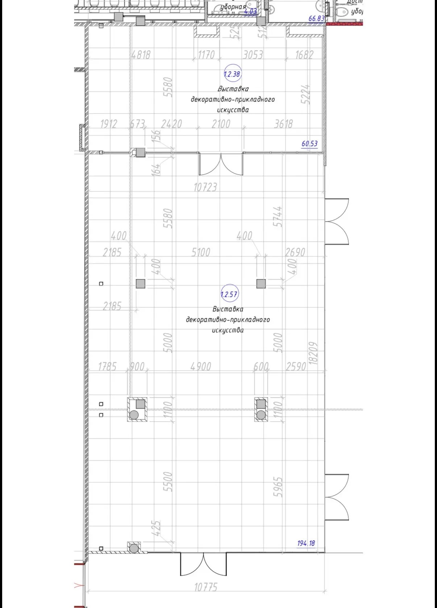
| Помещение | Площадь, м² | Габариты по плану |
|---|---|---|
| № 1.2.38 — малый зал | 60,53 | 10 723 × около 5 580 мм |
| № 1.2.57 — основной зал | 194,18 | 10 723 × 18 209 мм |
| Итого | 254,71 | — |
- Город. Павильон размещается в Казани. Нижнекамский муниципальный район, который значится в списке партнёров, — юридический адрес оператора, а не площадка проекта.
- Планировка сходится. 10,723 × 18,209 = 195,3 м² против заявленных 194,18 м² в основном зале — расхождение в пределах толщины колонн и выступов.
- Зал свободной планировки. Внутри основного зала стоят четыре колонны сечением 400 × 400 мм с шагом 5 100 и 5 000 мм — они задают сетку расстановки оборудования.
- Два входа. Помещения разделены перегородкой с проёмом и имеют выходы в общий коридор со стороны правого фасада.
- Санузлы рядом. В верхней части плана показаны уборные вне арендуемой площади.
Дизайнерское решение павильона
Пять визуализаций проекта. Объём работ по каждому решению в смете отдельно не разбит.
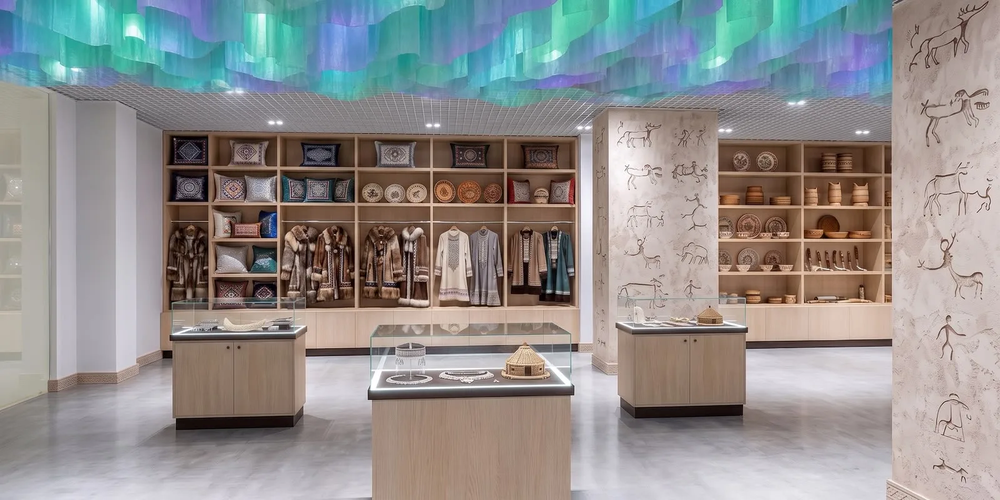
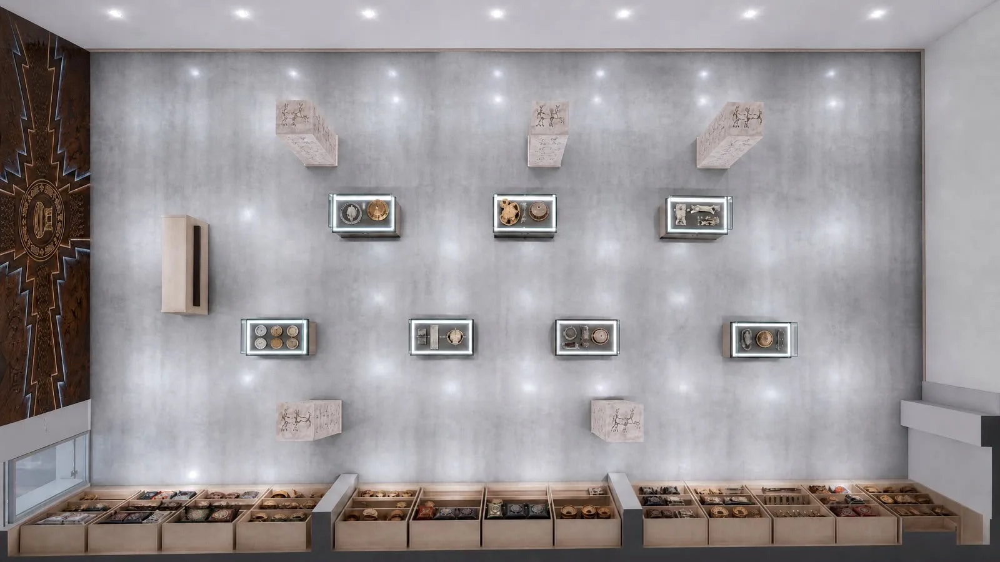
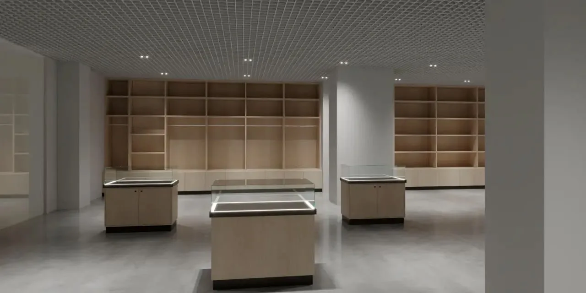
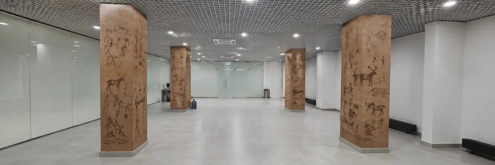
Что читается по визуализациям
- Материалы: светлое дерево корпусной мебели, тёмный цоколь тумб, бетонный пол, светлые стены под фактуру камня.
- Потолок: подвесной грильято со встроенными светильниками — инсталляция северного сияния крепится к существующей системе, а не вместо неё.
- Свет: отдельная подсветка в каждой витрине и по контуру полок, помимо общего освещения зала. Это отдельная статья электромонтажа.
- Хранение: у всех тумб-витрин закрытые отсеки внизу, у пристенных стеллажей — глухие базы. Запас хранится в зале, отдельная кладовая на плане не выделена.
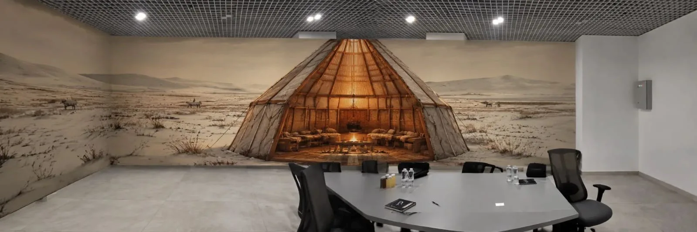
Резиденты и ассортимент
Три бренда, формирующие наполнение павильона. Формат их присутствия — аренда, комиссия или выкуп товара — предстоит определить.
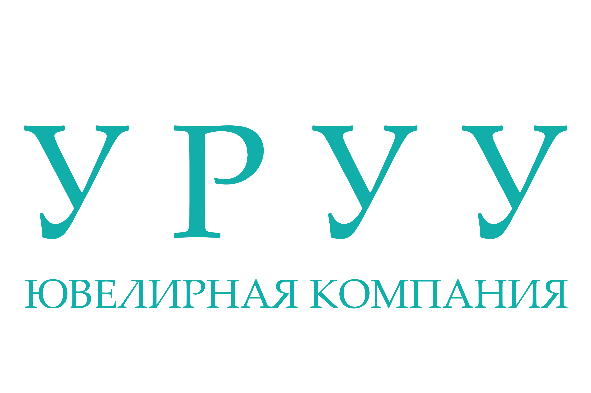
ООО «УРУУ»
Ювелирная компания · с 2016 года
Один из самых узнаваемых ювелирных брендов Якутии. Позиционирует себя как лидер ювелирного производства в Республике Саха (Якутия) и на Дальнем Востоке. Свою миссию бренд формулирует так: сохранять и популяризировать историю, культуру и традиции якутского народа через украшения, сочетая этнические мотивы с современными трендами.
- Визитная карточка: якутские национальные украшения — бастына, браслеты, серьги.
- Ассортимент: серебро, золото, обручальные кольца, кольца с бриллиантами и редкими драгоценными камнями.
- Индивидуальные заказы: от эскиза до готового изделия по идее клиента.
- Производство: собственный ювелирный завод с полным циклом, контроль качества на каждом этапе.
- Гарантия: пожизненная на золотые изделия.
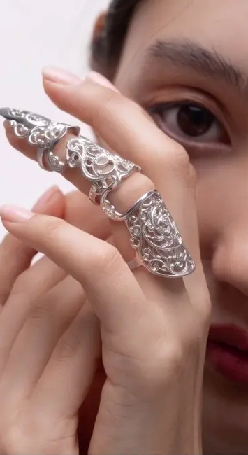
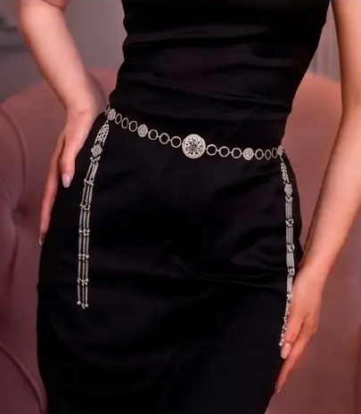
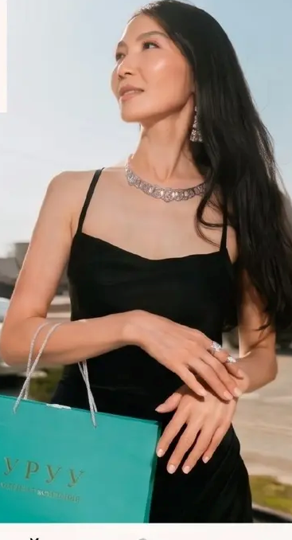
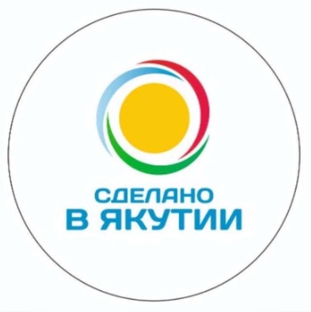
«Сделано в Якутии»
Бренд и маркетинговая платформа
Не отдельная компания, а платформа, объединяющая местных производителей и продвигающая товары, созданные в Республике Саха (Якутия). Проект призван повысить узнаваемость якутских товаров внутри республики и за её пределами, поддержать малый и средний бизнес и показать уникальность регионального производства — от традиционных ремёсел до современных продуктов.
- Сувениры и промыслы: резьба по кости, украшения, национальная одежда.
- Продукты питания: оленина, рыба, дикоросы — ягоды, грибы, травы — мёд.
- Одежда и аксессуары с этническими мотивами.
- Косметика и товары для дома на основе местных компонентов.
- Изделия местных ремесленников и локальных брендов.
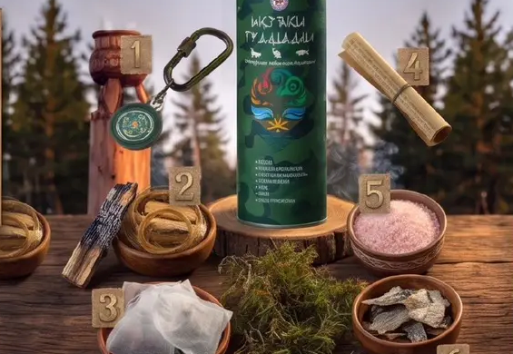
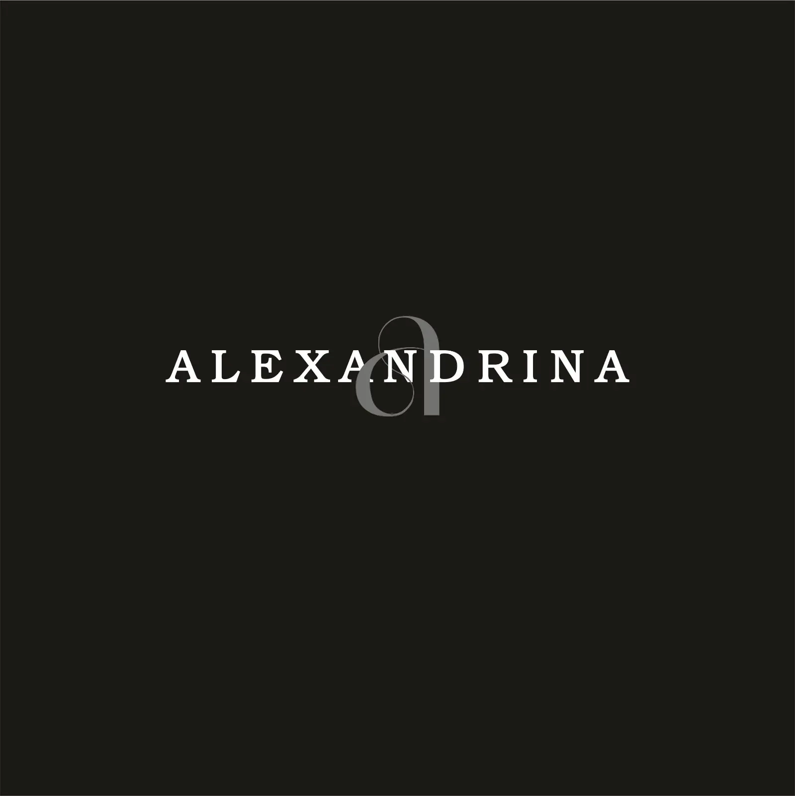
Alexandrina
Меховое ателье-шоурум · Якутск
Меховое ателье-шоурум в Якутске: готовой линейки нет, каждое изделие шьётся или перекраивается под клиента. Основательница — Александрина Козлова. Специализация — работа с мехом: пошив новых изделий и рестайлинг, то есть перекрой изделий клиента в новую вещь.
- Пошив: шубы, пальто, болеро, дублёнки, полупальто, шарфы, варежки, сумки.
- Рестайлинг: переделка изделий клиента — отдельная услуга с собственным спросом.
- Сильная сторона: головные уборы, которые сами клиенты называют ключевым «коньком» ателье.
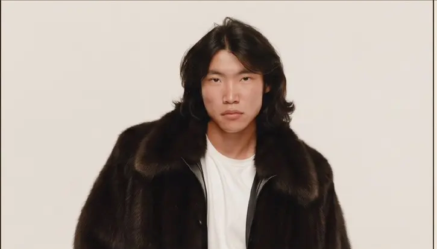
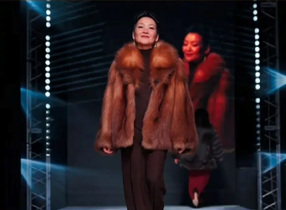
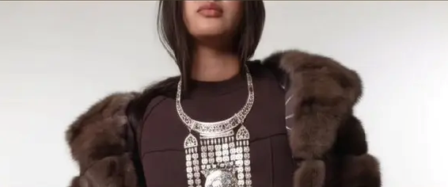
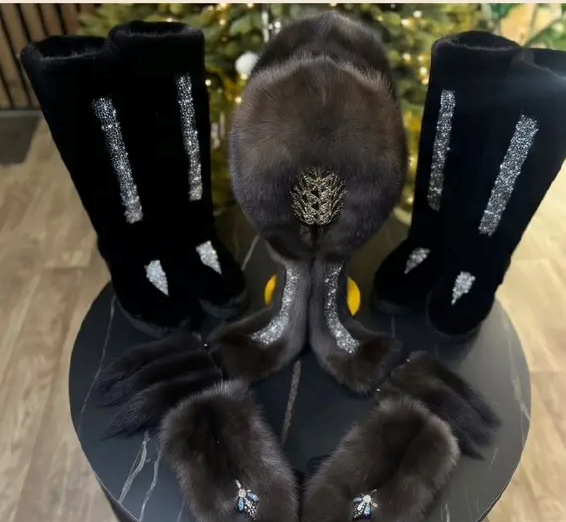
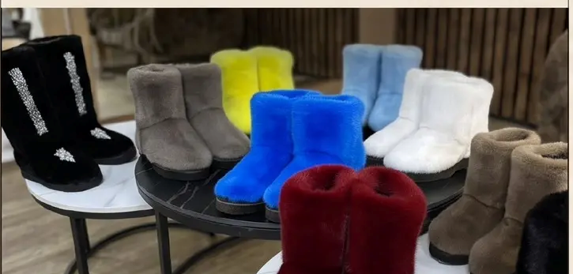
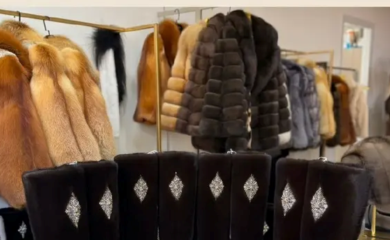
Партнёры проекта
Участники со стороны республики и принимающего региона, сгруппированные по типу участия.
Государственные и муниципальные
- Нижнекамский муниципальный район Республики Татарстан
- Администрация города Якутска, ГО «город Якутск»
- Министерство предпринимательства, торговли и туризма Республики Саха (Якутия)
- Министерство культуры и духовного развития Республики Саха (Якутия)
- Комитет драгоценных металлов Республики Саха (Якутия)
Отраслевые и коммерческие
- АО «АЛРОСА»
- ООО «УРУУ»
- Меховой бренд «Александрина»
- Ассоциация предпринимателей Республики Саха (Якутия) «Сделано в Якутии»
Что это даёт
Участие Комитета драгоценных металлов и АО «АЛРОСА» закрывает вопрос происхождения и легальности ювелирного и камнерезного ассортимента — для категории с пробирным надзором это не формальность.
Событийная программа
Два министерства и администрация Якутска — ресурс для дней республики, выставок, гастролей мастеров и информационной поддержки. Для павильона, живущего на повторных визитах, событийный календарь важнее разовой рекламы.
Принимающая сторона
Нижнекамский муниципальный район — партнёр со стороны Татарстана и юридический адрес оператора. Сам павильон работает в Казани: городские согласования, событийная афиша и участие в казанских мероприятиях идут через взаимодействие с администрацией города.
Чего в списке нет
Ни у одного партнёрства не описаны форма и объём участия. Для инвестора разница принципиальна: письмо о намерениях, соглашение о сотрудничестве и обязательство по финансированию — три разных уровня надёжности.
Структура сметной стоимости
Смета ремонтных работ и оснащения торговым оборудованием.
| Статья | Минимум, ₽ | Максимум, ₽ | Доля в максимуме |
|---|---|---|---|
| Товарно-материальные ценностиНаполнение павильона товаром | 8 500 000 | 8 500 000 | 60,7 % |
| Ремонтные работыОтделка двух помещений | 1 000 000 | 2 500 000 | 17,9 % |
| Мебель и оборудованиеВитрины, стеллажи, тумбы, подсветка | 1 500 000 | 3 000 000 | 21,4 % |
| Итого потребность | 11 000 000 | 14 000 000 | 100 % |
Удельные вложения по минимуму сметы
Удельные вложения по максимуму сметы
Только ремонт и оборудование, без товара
Главное о структуре сметы
Три пятых бюджета — это товар, а не стройка. Расходы на ремонт и оборудование определены вилкой в 2,2 раза: от 2,5 до 5,5 млн ₽. Дизайн-проект с росписью колонн, панно и текстильной инсталляцией потолка тяготеет к верхней границе, базовая расстановка из визуализации без наполнения — к нижней.
Что в смете не учтено
- Арендные и обеспечительные платежи за период ремонта
- Проектная документация и согласования
- Охранно-пожарные системы и сигнализация для ювелирной группы
- Кассовое и учётное оборудование, программное обеспечение
- Логистика товара из Якутии до площадки
- Оборотные средства на первые месяцы работы
Финансовая модель
Модель построена как калькулятор: задайте параметры — и увидите, при каких условиях проект сходится.
Параметры
Четыре готовых сценария или ручная настройка каждого показателя.
Результат за год
Площадь 254,71 м² зафиксирована по обмерному плану.
Выручка
—Чистая прибыль
—Почему оборачиваемость так важна
Ювелирные изделия и мех оборачиваются медленно: товар может лежать месяцами. При запасе 8,5 млн ₽ и наценке 100 % один дополнительный оборот в год — это около 17 млн ₽ выручки, а потеря десятой доли оборота — около 1,7 млн ₽. Это самый чувствительный параметр модели, и проверять его нужно на реальной статистике резидентов.
Чувствительность к арендной ставке
При ставке 1 200 ₽ за м² аренда съедает около 3,7 млн ₽ в год — сопоставимо со всем бюджетом ремонта и оборудования. Если принимающая сторона предоставляет площадку на льготных условиях, проект выходит в прибыль при заметно более скромных продажах. Сценарий «Льготная аренда» показывает разницу.
Товарный запас как оборотный капитал
8,5 млн ₽ в товаре остаются активом: при закрытии проекта они возвращаются распродажей, пусть и с дисконтом. Поэтому срок окупаемости считается только по невозвратной части — ремонту и оборудованию, а товар учитывается как оборотный капитал.
Риски
Что может помешать проекту и чем каждый риск купируется.
Замороженный товарный запас
60,7 % бюджета вложено в товар, который оборачивается медленно. Если фактическая оборачиваемость окажется меньше одного оборота в год, деньги встанут в витринах. Риск снижается за счёт комиссионной схемы с резидентами вместо выкупа.
Сезонность меха
Меховая группа продаётся с октября по февраль, летом занимает площадь без отдачи. Нужна ротация экспозиции или сезонное перераспределение площади в пользу промыслов и продуктов.
Особый режим для драгметаллов
Ювелирный ассортимент требует охранной сигнализации, сейфового хранения, постановки на специальный учёт и соблюдения правил пробирного надзора. Эти затраты в смете не выделены.
Логистика через страну
Плечо Якутск — Казань длинное и дорогое, а часть ассортимента — продукты питания с ограниченным сроком годности и температурным режимом. Пополнение запаса не будет быстрым.
Кадры
Формат выставки работает только тогда, когда продавец разбирается в товаре и может объяснить, из чего складывается цена. Обычный продавец-кассир обесценивает всю дизайн-концепцию.
Разрыв между сметой и дизайн-проектом
Визуализации показывают роспись колонн, панно с подсветкой и текстильную инсталляцию потолка. Нижняя граница сметы в 2,5 млн ₽ на ремонт и мебель такой объём работ едва ли покрывает — вероятен сдвиг к верхней границе.
Статус оператора
Оператор — автономная некоммерческая организация. Регулярная розничная торговля через АНО требует отдельной проработки налогового режима и уставных видов деятельности с бухгалтером и юристом.
Этапы запуска
Последовательность работ. Сроки даны в периодах от старта: до подписания договора аренды календарные даты смысла не имеют.
До начала затрат
Зафиксировать основания
Закрепить конкретную площадку в Казани, получить арендную ставку и условия, согласовать формат участия каждого резидента, проверить с бухгалтером налоговый режим АНО при розничной торговле. До этого шага смета остаётся оценочной.
Месяцы 1–2
Договоры и проект
Договор аренды, соглашения с резидентами и партнёрами, рабочая документация по дизайн-проекту, спецификация торгового оборудования с точными ценами вместо вилки, согласование планировочного решения.
Месяцы 2–4
Ремонт и оснащение
Отделка обоих помещений, изготовление и монтаж витрин и стеллажей, художественные работы по колоннам и панно, инсталляция потолка, охранно-пожарные системы, электрика и подсветка витрин.
Месяц 4
Товар и учёт
Формирование товарного запаса на 8,5 млн ₽, логистика из Якутии, постановка ювелирной группы на специальный учёт, внедрение товароучётной системы и касс, обучение персонала товару, а не только кассе.
Месяц 5
Открытие
Событие открытия с участием партнёров-министерств и администраций, первая республиканская экспозиция, запуск событийного календаря на полгода вперёд.
Месяцы 6–12
Проверка модели фактом
Через квартал работы появляются реальные оборачиваемость, средний чек и структура спроса по категориям. Модель из раздела 08 пересчитывается на фактических данных и только тогда становится планом.
Что нужно получить от заказчика
Перечень данных, без которых бизнес-план останется концепцией. Каждый пункт напрямую меняет цифры в разделе 08.
| Вопрос | На что влияет |
|---|---|
| Точный адрес площадки в КазаниЗдание, этаж, расположение в городе | Трафик, арендная ставка, логистика, состав ассортимента |
| Арендная ставка и условияВключая период ремонта и обеспечительный платёж | Крупнейшая статья операционных расходов, точка безубыточности |
| Формат работы с резидентамиАренда места, комиссия или выкуп товара | Кто несёт товарный риск на 8,5 млн ₽, структура доходов |
| Источник финансированияСобственные средства, гранты, партнёрские взносы, кредит | Наличие процентных расходов, график платежей |
| Налоговый режим оператораПорядок ведения торговли через АНО | Ставка налога в модели, требования к учёту |
| Штат и график работыКоличество смен, состав команды | Фонд оплаты труда, качество обслуживания |
| Ожидаемая наценка по категориямОтдельно по ювелирке, меху и промыслам | Валовая прибыль, приоритет категорий в экспозиции |
| Статистика продаж резидентовОборачиваемость и средний чек в их точках в Якутске | Подтверждение главного допущения модели — оборачиваемости |